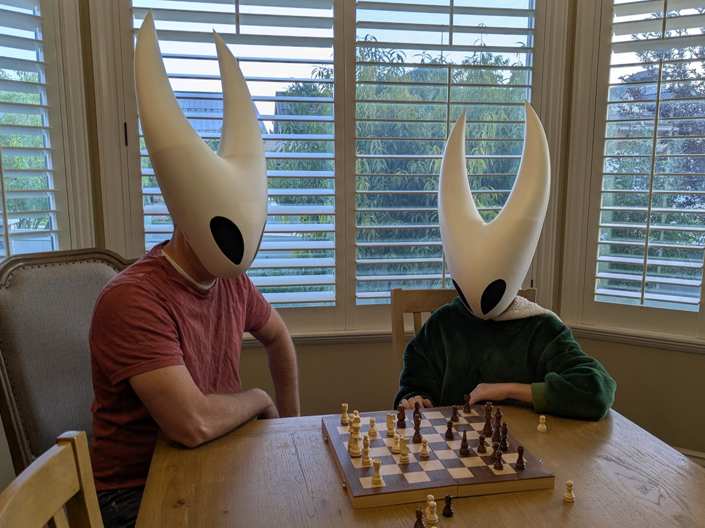

Hornet Mask — Adult Hollow Knight / Silksong Cosplay
Free STL by Spencer Mann (Spencermann) — original design on MakerWorld.

This is the adult-size Hornet Mask from Hollow Knight: Silksong — the design that gets the most downloads of anything I publish. The original Hornet mask was built for my kids; this version is scaled for an adult head, with print-friendly seams and Bambu Lab profiles so you can go from download to a wearable mask without remodeling it yourself.
Seven months ago I built the Hornet mask from Hollow Knight, with the release of Silk Song that mask has gotten more attention than any of my other designs. My original design was made for my kids and fit them perfectly, but was a bit too small to fit on an adults head. Tags: hornet, silk song, Silksong, silksong.
Download free on MakerWorld